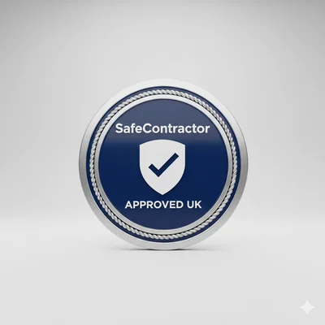
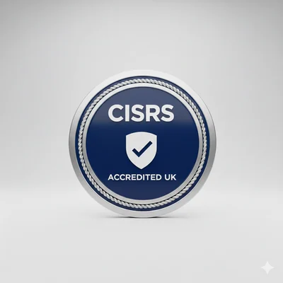
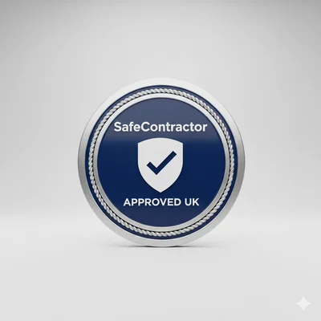
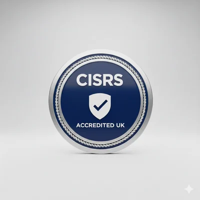

Safety & Regulatory Compliance
Setting the benchmark for height safety through rigorous auditing, training, and engineering excellence.
Our Certifications
  
 TG20:21 & SG4:22 Standards
All our scaffolds are designed and erected in strict accordance with TG20:21 (Operational Guide for Tube and Fitting Scaffolding) and SG4:22 (Preventing Falls in Scaffolding Operations). This ensures every structure we build has been mathematically verified for load-bearing stability and wind resistance.
The 7-Day Inspection Rule
Compliance doesn't end once the scaffold is up. We provide mandatory 7-day safety inspections and post-inclement weather checks. Every structure is fitted with a Scaftag system, providing a visible, real-time record of the scaffold's status for all site workers.
RAMS & Site-Specific Audits
Before a single tube is delivered, our NEBOSH-qualified safety officers produce a comprehensive Risk Assessment and Method Statement (RAMS). We conduct site-specific audits to identify overhead power lines, underground services, and public thoroughfare risks.
Workforce Competency
Safety is only as good as the people on the tools. 100% of our operatives hold valid CISRS cards and undergo regular Toolbox Talks to stay updated on the latest NASC safety guidance and rescue-from-height protocols.
Transparency & Documentation
Download our current safety certifications and insurance documents for your site files:
Safety Consultation
Need a site-specific safety audit or have questions about our compliance standards?
24/7 Safety Emergency Line: 0161 555 9999